WallRun (v1.3.0) - User Guide
Blueprint and C++ friendly first-person wall running with options exposed cleanly in the Details panel, and everything tunable across C++, Blueprints, and Details panels. Drop in one component for responsive wall runs, directional wall leaps, and cinematic camera tilt.
Immediate First-Person Demo Map
/WallRun/Examples/Maps/L_WallRunDemo and press Play (PIE). All functionality will work out of the box in the demo for testing.
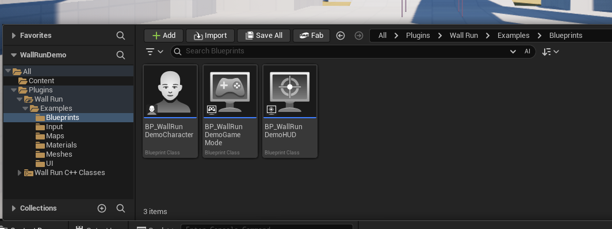
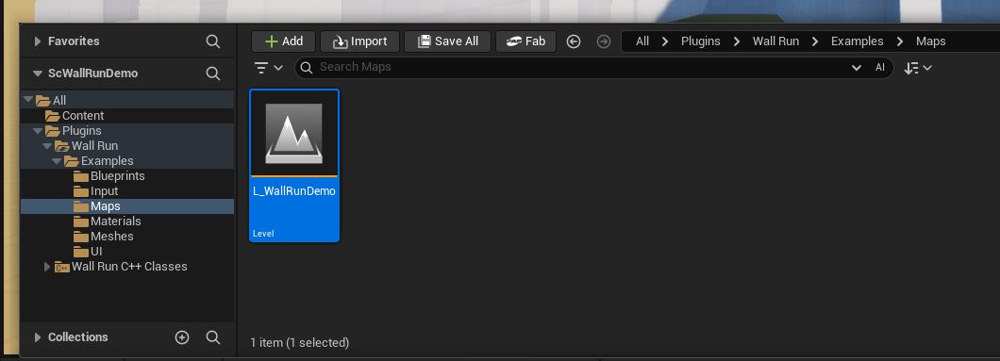
| Input | Action |
|---|---|
WASD / Mouse | Move and look around |
SpaceBar | Jump off the ground |
SpaceBar, then hold WASD near a wall | Attach to the wall and wall run while holding Left Shift (hold-key mode) or automatically when auto-detect is enabled |
Left Shift | Engage wall running only while held and detach cleanly on release |
SpaceBar (while on or near a wall) | Leap off the wall: steer forward, wide away, tight hop, or reverse with WASD |
Setup
Step 1: Add Wall Run to Your Character
Copy WallRun into Plugins/, enable it, and drag Wall Run onto your ACharacter, then assign your own InputMappingContext, IA_WallRun, and IA_WallJump assets in Details (or check Auto Detect Walls).
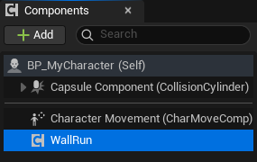
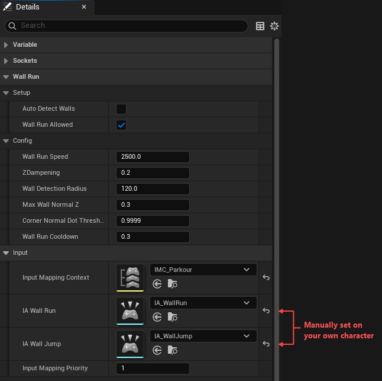
Step 2: Add Camera FX (Optional)
Drag in Wall Run Camera FX and set Target Spring Arm and Target Camera to your character's components to drive camera tilt and FOV while wall running.
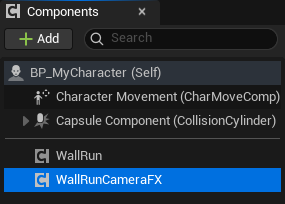
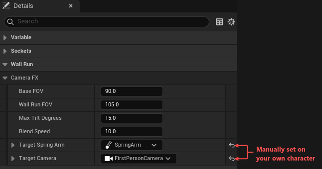
Step 3: Combine Ground Jump & Wall Jump (Optional)
Because Unreal's built-in Jump only fires on solid ground, share a single Jump key by wiring it into Try Wall Jump (mid-air wall launch on True) with normal Jump on False.
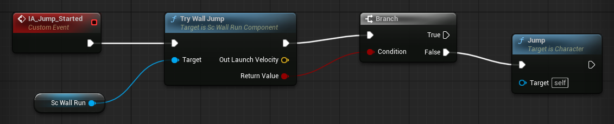
End of Setup
Your character now catches walls cleanly, launches with crisp directional control, and tilts through turns automatically. Everything below helps you dial in the exact game feel and drive audio, VFX, or custom stamina gates.
Extras A - Tuning Feel & Custom Blueprint Wiring
Directional Wall Jump Tuning
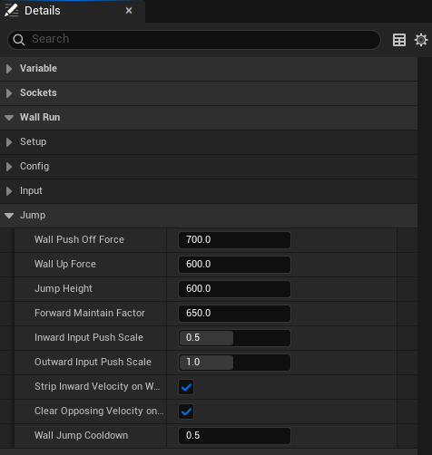
- Wall Push Off & Up Force: base outward kick and vertical lift on launch
- Inward Input Push Scale: holding toward the wall tightens into a quick upward hop
- Outward Input Push Scale: holding away widens into a fast cross-corridor leap
- Strip Inward / Clear Opposing Velocity: keeps existing momentum from fighting the jump
Wall Detection, Speed & Corner Filtering
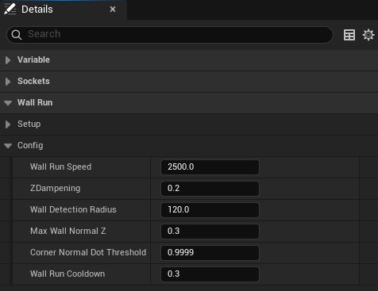
- Wall Run Speed & Z Dampening: forward carry velocity and vertical fall glide
- Detection Radius & Max Normal Z: keeps walls responsive while rejecting floors and slopes
- Corner Normal Dot Threshold: detaches smoothly instead of snagging around sharp edges
Bind External Camera Rig on BeginPlay
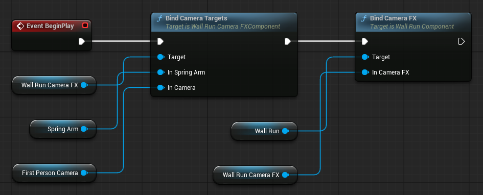
Use BindCameraTargets and BindCameraFX when your camera lives on a separate actor or spawns at runtime.
Manual Hold-Key Blueprint Wiring
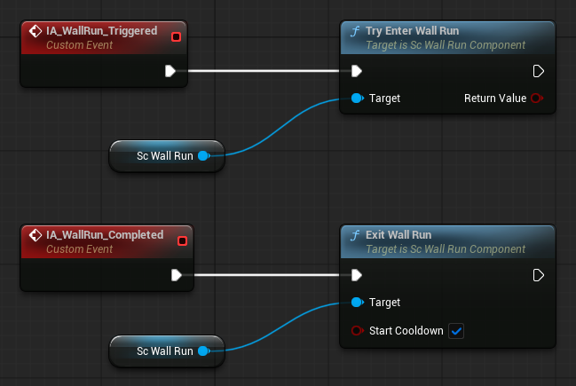
Prefer Blueprint Enhanced Input events over Details bindings? Drive Try Enter Wall Run (Triggered) and Exit Wall Run (Completed).
Gate Wall Runs with Set Wall Run Allowed
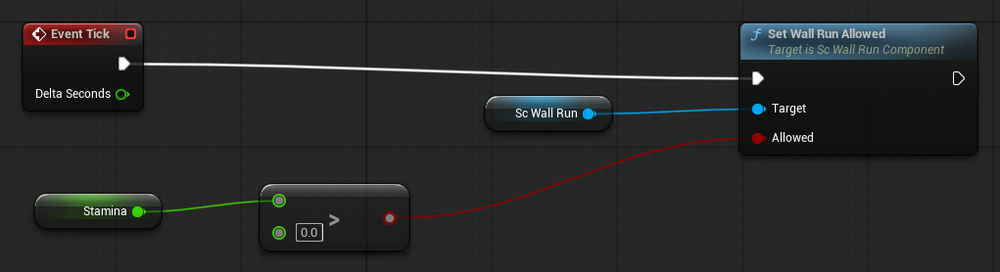
Plug stamina checks or state machines into Set Wall Run Allowed so players drop smoothly when blocked without removing input bindings.
Extras B - Event Callbacks
OnWallRunEntered
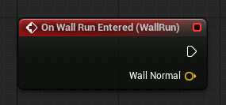
Fires with WallNormal when wall running attaches.
OnWallRunExited
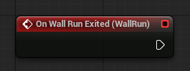
Fires cleanly on landing, corner detach, release, or wall jump.
OnWallJumpLaunched
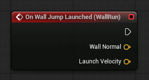
Fires with WallNormal and computed LaunchVelocity.
Extras C - Blueprint Nodes & State Queries
TryEnterWallRun
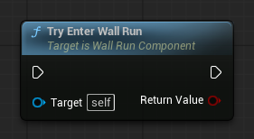
Attaches to a nearby valid wall on demand.
ExitWallRun
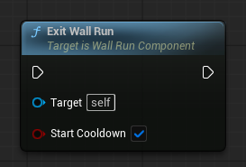
Detaches cleanly and optionally starts cooldown.
TryWallJump
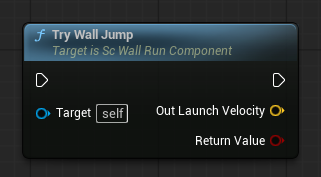
Performs directional mid-air launch off the active wall.
IsAllowedToEnter
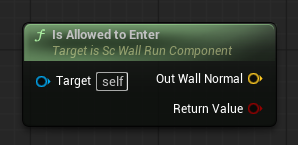
Checks eligibility and nearby vertical wall normal.
IsWallRunning
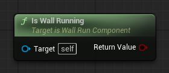
Returns true while the character is riding a wall.
GetCurrentWallNormal
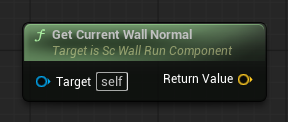
Returns the active wall surface normal for sparks or FX.
GetCurrentRollDegrees
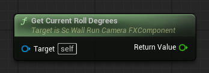
Reads smoothed camera tilt angle for HUD or animations.
IWallRunCharacterContract
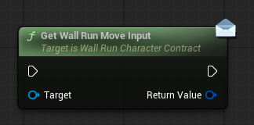
Supply custom 2D movement input or jump gates.
Appendix - API Reference
This table highlights the primary entry points. Additional properties, helper functions, Blueprint nodes, and native C++ APIs are available in Unreal Editor Details panels, Blueprint context menus, and the plugin C++ headers.
| Name | Type | Inputs / Outputs | Functionality |
|---|---|---|---|
UWallRunComponent | Component | In: Owner ACharacterIn: IA_WallRun / IA_WallJump | Detects vertical walls, projects wall-run velocity, handles directional jumps, and drives cooldowns |
UWallRunCameraFXComponent | Component | In: SpringArmIn: Camera | Auto-discovers your rig (or binds custom targets) for smooth roll tilt and FOV punch |
TryEnterWallRun / ExitWallRun | Callable | In: bStartCooldownReturn: bool | Start or end a wall run cleanly on demand from input or Blueprint logic |
TryWallJump | Callable | Out: OutLaunchVelocityReturn: bool | Launches the player off the wall with WASD-steered force and inward clamping |
IsAllowedToEnter / CheckIfNearWall | Callable | Out: OutWallNormalReturn: bool | Checks cooldowns, airborne eligibility, and nearby wall orientation |
SetWallRunAllowed / SetAutoDetectWalls / SetMoveInputOverride / BindCameraFX | Callable | In: bool / FVector2DIn: CameraFX | Switch entry modes, gate wall runs from stamina/state, or feed AI/custom movement input |
IsWallRunning / IsWallRunInputHeld / Cooldowns / Normal & Roll Getters | Pure | Return: bool / FVector / float | Read live wall state, active normal, cooldowns, roll angle, and FOV for HUD or AnimBPs |
OnWallRunEntered / OnWallRunExited | Event | Out: WallNormal | Trigger footsteps, scrape particles, and animation transitions when runs start or stop |
OnWallJumpLaunched | Event | Out: WallNormalOut: LaunchVelocity | React to every wall leap with directional jump audio or camera kick |
IWallRunCharacterContract / IWallRunListener | Interface | Return: MoveInputReturn: CanJump | Optional contracts for custom pawns supplying non-standard input or external listeners |